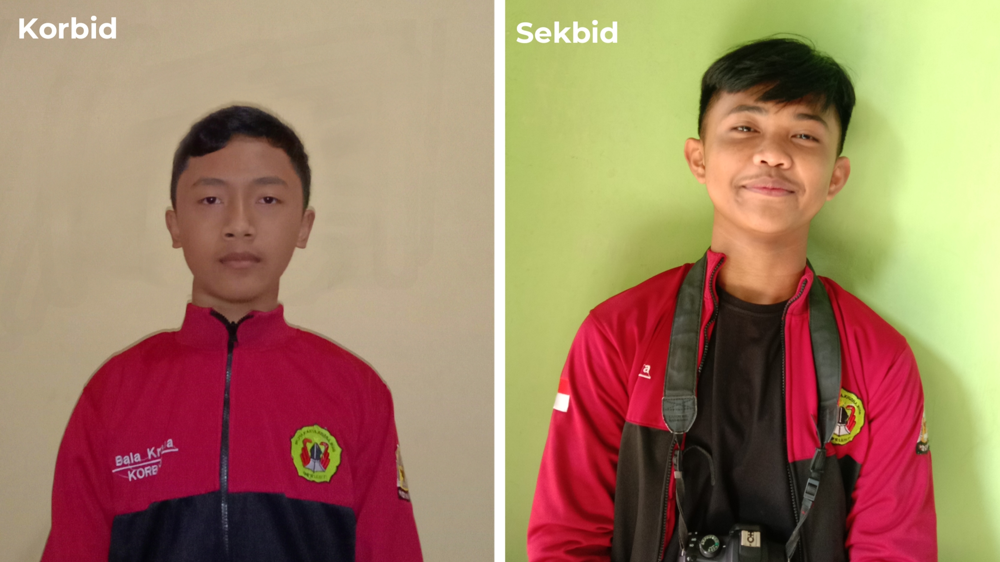

SUSUNAN PENGURUS OSIS PERIODE 2021-2022
Inti Osis:
1. Ketua: Ni Putu Reyna Pricilia Putri
2. Wakil ketua 1: Kadek Dwi Candra Winata
3. Wakil ketua 2: Ni kadek Dian Arianti Sani
4. Wakil ketua 3: Ketut Panji Santika Sindhu Harta
5. Sekretaris Umum: Sang Nyoman Andra Satriawan
6. Skretaris 1: Kadek Shaneta Padmasari Budi
7. Skretaris 2: Sang Ayu Made Widya Utami
8. Bendahara Umum: I Made Aravinda Kumara
9. Bendahara 1: Made Satria Dharma Mantra
10. Bendahara 2: Sang Ayu Pelita Dewi
Sekbid:
1. Seksi Ketaqwaan Terhadap Tuhan Yang Maha Esa:
a. I Made Adi Artaweda
b. I Dewa Gede Daniswara Putra
2. Seksi Kehidupan Berbangsa dan Bernegara:
a. Ni Kadek Sunita Dwiprayanti
b. Jro Putu Dangin Satria Mahotama
3. Seksi Pendidikan Pendahuluan Bela Negara:
a. Desak Nyoman Putri Krisna Pradnyaniti
b. Sang Ayu Made Dwi Aprilia
4. Seksi Kepribadian dan Budi Pekerti Luhur:
a. Ni Komang Tri Putri Asih
b. Ni Luh Putu Widya Pradnyaningsih
5. Seksi Berorganisasi Pendidikan Politik dan Kepeminpinan:
a. I Putu Bala Krishna Dasa
b. Komang Surya Prayoga
6. Seksi Ketrampilan dan Kewiraswastaan:
a. I Gede Windu Merta Ada
b. Ni Kadek Ema Leoni Agustin Putri
7. Seksi Kesegaran Jasmani dan Daya Kreasi:
a. Dewa Ayu Made Diah Satriani
b. Kartika Ningrum
8. Seksi Persepsi, Apresiasi dan Kreasi Seni:
a. I Dewa Ayu Winda Ardelia
b. I Gusti Putu Gana Ramadinata
9. Seksi Pembinaan Teknologi Informasi Dan Komunikasi/Tik:
a. Ni Luh Aprilia Putri
b. Sang Ayu Nyoman Mira Sekar Taji
10. Seksi Pembinaan Komunikasi dalam Bahasa Inggris:
a. Ni Luh Putu Cintya Estiana
b. Ni Kadek Widya Martha
SUSUNAN PEMBINA OSIS PERIODE 2021-2022
1. Penanggung Jawab: Drs. I Nengah Swidastra
2. Koordinator: Sang Gede Sukadana, S.Pd
3. Ketua: I Made Derata, S.Pd
4. Wakil Ketua: I Ketut Jaman, S.Pd
5. Sekretaris: Ni Made Dwi Ari Astuti, S.Sn
6. Bendahara: Ni Wayan Ngilis Murtiasih, S.Pd
Anggota:
1. Desak Putu Mustari, S.Pd
2. Ni Wayan Rusa, S.Ag
3. Pande Putu Dharma Hadinatha, S.Pd
4. Ni Made Lestari, S.Pd.,M.Pd
5. Ni Luh Emi Puspini, S.Pd
6. Ni Kadek Rini, S.Pd
8. Ni Wayan Artuti, S.Pd
Pembina Sekbid:
1. Ni Wayan Rusa, S.Ag:
Ketaqwaan Terhadap Tuhan Yang Maha Esa
2. Ni Luh Emi Puspini, S.Pd, S.Pd:
Seksi Kehidupan Berbangsa dan Bernegara
3. I Ketut Jaman, S.Pd:
Seksi Pendidikan Pendahuluan Bela Negara
4. Ni Wayan Candriasih, S.Pd:
Seksi Kepribadian dan Budi Pekerti Luhur
5. Ni Ketut Candra Kirana, SH:
Seksi Berorganisasi Pendidikan Politik dan Kepeminpinan
6. I Made Sudarsa, S.Sn:
Seksi Ketrampilan dan Kewiraswastaan
7. Pande Putu Dharma Hadinatha:
Seksi Kesegaran Jasmani dan Daya Kreasi
8. Ni Made Dwi Ari Astuti, S.Sn:
Seksi Persepsi, Apresiasi dan Kreasi Seni
9. Ketut Suparta Sariyasa, ST:
Pembinaan Teknologi Informasi Dan Komunikasi/Tik
10. I Wayan Ardika, S.Pd.,Ing:
Pembinaan Komunikasi dalam Bahasa Inggris
PROFIL PENGURUS OSIS PERIODE 2021-2022
Ketua Osis:
Ni Putu Reyna Pricilia Putri
Jabatan: Ketua Osis
Program kerja:
1. Mengaktifkan Semua Program Kerja Setiap Bidang.
2. Mengadakan Rapat Mingguan Dan Bulanan.
3. Melaksanakan Kegiatan Yang Direncanakan Setiap Bidang.
4. Mengontrol Dan Mengevaluasi Program Kerja Sekbid.
5. Bekerja Sama Dengan Pihak Lain Dalam Lingkup Sekolah Atau Luar Sekolah.
6. Menyusun Laporan Pertanggungjawaban OSIS Satu Periode.
Wakil Ketua:
Kadek Dwi Candra Winata
Jabatan: Wakil Ketua 1
Program kerja:
1. Menggantikan tugas ketua, jika ketua berhalangan hadir.
2. Mengawasi kinerja dari setiap bidang bidang yang telah di buat.
3. Mengawasi kinerja dari Waka 2 dan Waka 3.
4. Melaksanakan dan mengemban dengan baik tugas tugas yang telah diberikan dari pembina osis.
5. Mengikuti /melaksanakan setiap kegiatan yang telah direncanakan.
Ni kadek Dian Arianti Sani
Jabatan: Wakil Ketua 2
Program kerja:
1. Memberikan Saran Atau Masukan Pada Ketua OSIS.
2. Membantu Penetapan Kebijakan OSIS.
3. Membantu Koordinasi Sekbid Dan Rapat OSIS.
4. Membantu Ketua OSIS Menjalankan Program Kerja Satu.
Periode.
5. Membantu Pembuatan Laporan Pertanggungjawaban OSIS.
Ketut Panji Santika Sindhu Harta
Jabatan: Wakil Ketua 3
Program kerja:
1. Memberikan Saran Atau Masukan Pada Ketua OSIS.
2. Membantu Penetapan Kebijakan OSIS.
3. Membantu Koordinasi Sekbid Dan Rapat OSIS.
4. Membantu Ketua OSIS Menjalankan Program Kerja Satu.
Periode.
5. Membantu Pembuatan Laporan Pertanggungjawaban OSIS.
Sekretaris:
Sang Nyoman Andra Satriawan
Jabatan: Sekretaris Umum
Program kerja:
1. Memberikan saran kepada ketua dalam rangka mengambil keputusan.
2. Mendampingi ketua dalam memimpin setiap rapat.
3. Menyiarkan, mendistribusikan dan menyimpan surat serta arsip yang berhubungan dengan pelaksanaan kegiatan.
5. Menyiapkan laporan, surat, hasil rapat dan evaluasi kegiatan.
6. Bersama ketua menandatangani setiap surat.
7. Bertanggung jawab atas tertib administrasi organisasi.
8. Bertindak sebagai notulis dalam rapat, atau diserahkan kepada wakil sekretaris.

Kadek Shaneta Padmasari Budi
Jabatan: Sekretaris 1
Program kerja:
1. Aktif membantu tugas sekertaris umum.
2. Membantu menyusun rencana kegiatan kerja.
3. Mengelola urusan perlengkapan.
4. Menggantikan tugas sekertaris umum jika sedang berhalangan.
5. Membantu wakil ketua OSIS mengkoordinir seksi-seksi.
Sang Ayu Made Widya Utami
Jabatan: Sekretaris 1
Program kerja:
1. Aktif membantu tugas sekertaris umum.
2. Membantu menyusun rencana kegiatan kerja.
3. Mengelola urusan perlengkapan.
4. Menggantikan tugas sekertaris umum jika sedang berhalangan.
5. Membantu wakil ketua OSIS mengkoordinir seksi-seksi.
Bendahara:
I Made Aravinda Kumara
Jabatan: Bendahara Umum
Program kerja:
1. Membantu bendahara umum mencatat pengeluaran dan pemasukan.
2. Membuat nota pengeluaran.
3. Menghitung pengeluaran dari kegiatan osis.
Made Satria Dharma Mantra
Jabatan: Bendahara 1
Program kerja:
1. Membantu bendahara umum mencatat pengeluaran dan pemasukan.
2. membuat nota pengeluaran.
3. menghitung pengeluaran dari kegiatan osis.
Sang Ayu Komang Pelita Dewi
Jabatan: Bendahara 2
Program kerja:
1. Membantu bendahara umum mencatat pengeluaran dan pemasukan.
2. membuat nota pengeluaran.
3. menghitung pengeluaran dari kegiatan osis.
Seksi Bidang
1. Seksi Ketaqwaan Terhadap Tuhan Yang Maha Esa:
Jabatan:
Korbid: I Made Adi Artaweda
Sekbid: I Dewa Gede Daniswara Putra
Program kerja:
1. Memperingati hari-hari besar agama Hindu.
2. Mengadakan Trisandya setiap hari.
3. Membantu persiapan sembahyang.
5. Mekidung setiap hari Purnama.
5. Mecanang setiap hari.
2. Seksi Kehidupan Berbangsa dan Bernegara:
Jabatan:
Korbid: Ni Kadek Sunita Dwiprayanti
Sekbid: Jro Putu Dangin Satria Mahotama
Program kerja:
1. Melaksanakan Pembersihan Dan Persiapan Menjelang Hari Keagamaan Di Pura Sekolah.
2. Melaksanakan Piket Harian Pada Waktu Hari Libur Sekolah/Hari Raya.
3. Menyediakan Perlengkapan Dan Peralatan Pada Kegiatan Osis.
3. Seksi Pendidikan Pendahuluan Bela Negara:
Jabatan:
Korbid: Desak Nyoman Putri Krisna Pradnyaniti
Sekbid: Sang Ayu Made Dwi Aprilia
Program kerja:
1. Melaksanakan tata tertib sekolah.
2. Melaksanakan lomba 7 K antar kelas.
3. Melaksanakan kegiatan patroli.
Keamanan sekolah (PKS).
4. Mengamankan penyelenggaraan kegiatan ekstrakurikuler setiap ada kegiatan.
5. Mengamankan kegiatan OSIS.
6. Mengamankan keamanan di lingkungan sekolah.
4. Seksi Kepribadian dan Budi Pekerti Luhur:
Jabatan:
Korbid: Ni Komang Tri Putri Asih
Sekbid: Ni Luh Putu Widya Pradnyaningsih
Program kerja:
1. Menyukseskan gerakan berbahasa Indonesia/Daerah secara baik dan benar, melalui kegiatan lomba : Baca Puisi, Lomba Mengarang, Lomba Mesatua Bali dengan tema disiplin Siswa.
2. Melayat ke rumah duka warga SMP Negeri 1 Susut yang mengalami musibah/berdukacita.
3. Membantu penyelenggaraan KSPAN (Kelompok Siswa Peduli AIDS).
4. Meningkatkan sikap hormat siswa kepada Orang Tua, Guru, Karyawan, Sesama Siswa di lingkungan Sekolah dan Masyarakat.
5. Seksi Berorganisasi Pendidikan Politik dan Kepeminpinan:

Jabatan:
Korbid: I Putu Bala Krishna Dasa
Sekbid: Komang Surya Prayoga
Program kerja:
1. Melaksanakan Upacara Rutin Hari Senin Dan Hari Besar Nasional.
2. Melaksanakan Kegiatan Kepramukaan.
3. Mengunjungi Museum Dan Situs Bersejarah Rutin.
4. Mengadakan Lomba Pidato, Esai Atau Tata Upacara Bendera Di Lingkungan Sekolah.
5. Menyusun Agenda Peringatan Hari Besar Nasional.
6. Seksi Ketrampilan dan Kewiraswastaan:
Jabatan:
Korbid: I Gede Windu Merta Ada
Sekbid: Ni Kadek Ema Leoni Agustin Putri
Program kerja:
1. Melaksanakan usaha Koperasi OSIS.
2. Menyediakan konsumsi untuk setiap kegiatan OSIS.
3. Mengusahakan dana untuk membantu kelancaran kegiatan OSIS.
4. Mencari donatur/sponsor untuk pendanaan kegiatan OSIS.
5. Membantu penyelenggaraan Lomba Kording.
7. Seksi Kesegaran Jasmani dan Daya Kreasi:
Jabatan:
Korbid: Dewa Ayu Made Diah Satriani
Sekbid: I Dewa Ayu Kartika Ningrum
Program kerja:
1. Atletik.
a) Mengadakan latihan rutin.
b) Mengadakan latihan intensip sebelum PORSENI.
c) Mengikuti PORSENI.
2. Bola Voli.
a) Mengadakan latihan rutin.
b) Mengadakan pertandingan persahabatan.
c) Mengadakan latihan intensip sebelum PORSENI.
d) Mengikuti PORSENI.
3. Sepak Bola.
a) Mengadakan latihan rutin.
b) Mengadakan pertandingan persahabatan.
c) Mengadakan latihan intensip sebelum PORSENI.
d) Mengikuti PORSENI.
4. Pencak Silat (Bakti Negara).
a) Mengadakan latihan rutin.
b) Mengadakan latihan intensip sebelum PORSENI.
c) Mengikuti PORSENI.
d) Mengikuti lomba/kejuaraan lainnya.
5. Pencak Silat (Perisai Diri).
a) Mengadakan latihan rutin.
b) Mengadakan latihan intensip sebelum PORSENI.
c) Mengikuti PORSENI.
d) Mengikuti lomba/kejuaraan lainnya.
6. Catur.
a) Mengadakan latihan rutin.
b) Mengadakan latihan intensip sebelum PORSENI.
c) Mengikuti PORSENI.
7. Bulu Tangkis.
a) Mengadakan latihan rutin.
b) Mengadakan latihan intensip sebelum Permainan.
8. Seksi Persepsi, Apresiasi dan Kreasi Seni:
Jabatan:
Korbid: I Dewa Ayu Winda Ardelia
Sekbid: I Gusti Putu Gana Ramadinata
Program kerja:
1. Seni Tari.
a)Membantu menyelenggaraan ekstra kurikuler Tari.
b)Mengisi acara tari pada piodalan di Pura Sekolah.
c)Mengikuti lomba Tari.
2. Seni Tabuh.
a)Membantu penyelenggaraan ekstra kurikuler tabuh.
b)Melaksanakan kegiatan setiap kejuaraan dan pementasan.
c)Mengisi acara piodalan di Pura Sekolah.
3. Seni Rupa.
a)Membantu penyelenggaraan ekstra kurikuler seni rupa
b)Membantu penyelenggaraan latihan pada saat kegiatan lomba seni rupa.
c)Mengikuti lomba seni rupa.
4. Marching Band.
a)Membantu penyelenggaraan ekstra kurikuler marching band.
b)Membantu penyelenggaraan marching band saat upacara
bendera setiap hari Senin.
c)Membantu penyelenggaraan marching band pada kegiatan tingkat Kecamatan dan Kabupaten.
d)Membantu penyelenggaraan marching band pada kegiatan lomba tingkat Kabupaten dan Provinsi.
9. Seksi Pembinaan Teknologi Informasi Dan Komunikasi/Tik:
Jabatan:
Korbid: Ni Luh Aprilia Putri
Sekbid: Sang Ayu Nyoman Mira Sekar Taji
Program kerja:
1. Memanfaatkan TIK untuk memfasilitasi kegiatan pembelajaran.
2. Menjadikan TIK sebagai wahana kreativitas dan inovasi.
3. Memanfaatkan TIK untuk meningkatkan integritas kebangsaan.
4. Membantu penyelenggaraan lomba TIK.
5. Mempublikasikan prestasi yang dicapai/diraih oleh Siswa SMP Negeri 1 Susut.
6. Membantu penyelenggaraan Les dan Diklat Komputer.
10. Seksi Pembinaan Komunikasi dalam Bahasa Inggris:
Jabatan:
Korbid: Ni Luh Putu Cintya Estiana
Sekbid: Ni Kadek Widya Martha
Program kerja:
1. Melaksanakan lomba debat dan pidato.
2. Melaksanakan lomba menulis dan korespondensi.
3. Melaksanakan English Day.
4. Melaksanakan kegiatan berceritera dalam bahasa Inggris (Story Telling).